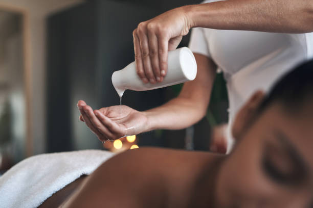

News
Aromatherapy Massage Benefits
Essential Oils in Treatments
Fort Lauderdale Aromatherapy Massage Spas
About Us
Fort Lauderdale Massage Therapy

What is the purpose of aromatherapy in massage treatments?
Jun 03, 2024
Aromatherapy is a holistic healing treatment that uses natural plant extracts to promote health and well-being.. When combined with massage therapy, aromatherapy can enhance the overall experience and provide numerous benefits for both the body and mind.
The purpose of aromatherapy in massage treatments is to create a synergistic effect that not only relaxes the body but also uplifts the spirit.
What essential oils are commonly used in Fort Lauderdale aromatherapy massages?
Jun 03, 2024
Aromatherapy massages in Fort Lauderdale often use a variety of essential oils to enhance the overall experience and benefits of the treatment.. These essential oils are carefully selected for their therapeutic properties and pleasant scents, creating a relaxing and rejuvenating atmosphere during the massage session.
Some commonly used essential oils in Fort Lauderdale aromatherapy massages include lavender, peppermint, eucalyptus, chamomile, and rosemary.
What benefits can be expected from an aromatherapy massage in Fort Lauderdale?
Jun 03, 2024
Aromatherapy massage is a popular form of alternative therapy that combines the benefits of traditional massage with the use of essential oils derived from plants.. In Fort Lauderdale, this holistic approach to healing and relaxation has gained widespread popularity due to its numerous therapeutic benefits.
One of the main advantages of an aromatherapy massage is its ability to promote relaxation and reduce stress.
What techniques are used during an aromatherapy massage session in Fort Lauderdale?
Jun 03, 2024
During an aromatherapy massage session in Fort Lauderdale, several techniques are utilized to enhance relaxation and promote overall well-being.. Aromatherapy involves the use of essential oils derived from plants to stimulate the senses and provide therapeutic benefits.
One of the key techniques used during an aromatherapy massage session is effleurage, which involves long, sweeping strokes that help to warm up the muscles and prepare them for deeper work.
What makes aromatherapy massages a popular choice among Fort Lauderdale residents?
Jun 03, 2024
Aromatherapy massages have become a popular choice among Fort Lauderdale residents for a variety of reasons.. One of the main factors that make these massages so appealing is the use of essential oils during the treatment.
How to Relax and Unwind with Aromatherapy Massage in Fort Lauderdale
Jun 03, 2024
In today's fast-paced world, it can be difficult to find time to relax and unwind.. With the constant demands of work, family, and other responsibilities, stress can quickly build up and leave us feeling overwhelmed.
Discover the Secret to Ultimate Stress Relief with Aromatherapy Massages in Fort Lauderdale
Jun 03, 2024
In today's fast-paced and hectic world, stress has become a common problem for many people.. Whether it's due to work pressures, personal issues, or just the demands of everyday life, stress can take a toll on both our physical and mental well-being.
How to Achieve Inner Peace and Serenity through Aromatherapy Massages in Fort Lauderdale
Jun 03, 2024
In today's fast-paced world, achieving inner peace and serenity can seem like a daunting task.. With the hustle and bustle of daily life, it's easy to feel overwhelmed and stressed.
Unlock the Power of Essential Oils for Healing and Relaxation in Fort Lauderdale
Jun 03, 2024
Essential oils have been used for centuries to promote healing and relaxation, and their therapeutic benefits are becoming more widely recognized in today's modern world.. In Fort Lauderdale, a city known for its vibrant lifestyle and beautiful beaches, unlocking the power of essential oils can provide a natural way to support overall well-being.
Whether you are dealing with stress, anxiety, physical ailments, or simply seeking a moment of tranquility in your busy day, essential oils offer a holistic approach to health and wellness.
Experience Blissful Tranquility with Luxurious Aromatherapy Massages in Fort Lauderdale
Jun 03, 2024
Are you in need of a little relaxation and rejuvenation?. Look no further than our luxurious aromatherapy massages in Fort Lauderdale.
Benefits of aromatherapy massage treatments in Fort Lauderdale
Jun 03, 2024
Aromatherapy massage treatments in Fort Lauderdale offer a plethora of benefits that can enhance your overall well-being and improve your quality of life.. These specialized massages combine the therapeutic benefits of touch with the healing properties of essential oils, creating a holistic experience that nurtures both the body and mind.
One of the key benefits of aromatherapy massage treatments is stress relief.
Popular essential oils used in aromatherapy massages
Jun 03, 2024
Aromatherapy massages have gained immense popularity in recent years, thanks to the soothing and therapeutic benefits they provide.. One of the key components of aromatherapy massages are essential oils, which are highly concentrated plant extracts known for their healing properties.
Different techniques and styles of aromatherapy massages available in Fort Lauderdale
Jun 03, 2024
Aromatherapy massages are a luxurious and relaxing way to rejuvenate both the mind and body.. In Fort Lauderdale, there are various techniques and styles of aromatherapy massages available to suit every individual's preferences and needs.
One popular technique is Swedish massage, which involves long, flowing strokes that help to relax muscles and improve circulation.
How to choose the best aromatherapist or spa for your aromatherapy massage
Jun 03, 2024
When it comes to choosing the best aromatherapist or spa for your aromatherapy massage, there are several factors to consider in order to ensure a relaxing and beneficial experience.
First and foremost, it is important to do your research.. Look for spas or therapists that have good reviews and recommendations from previous clients.
Personal experiences and testimonials from individuals who have received aromatherapy massages in Fort Lauderdale
Jun 03, 2024
Aromatherapy massages in Fort Lauderdale have become a popular choice for individuals looking to relax and rejuvenate their mind, body, and spirit.. Many people have shared their personal experiences and testimonials of the benefits they have received from these luxurious treatments.
One individual, Sarah, shared how she was feeling stressed and overwhelmed with her busy work schedule.